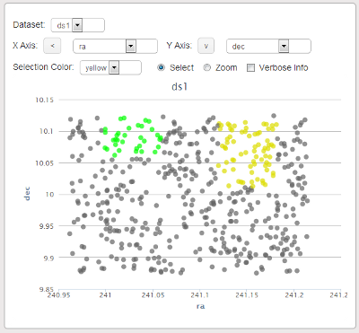

Scatter Plot
The scatter plot gadget allows you to visualize a data set by plotting two fields against each other. The data is automatically displayed after choosing a data set and x and y axes. The arrows next to the x and y axis dropdown boxes can be used to reverse the direction of the axes on the plot.
Making a selection on the scatter plot updates the color of the selected points in the shared dataset.
Checking off 'verbose info' causes all of the fields associated with a data point to be displayed when hovering over that data point.